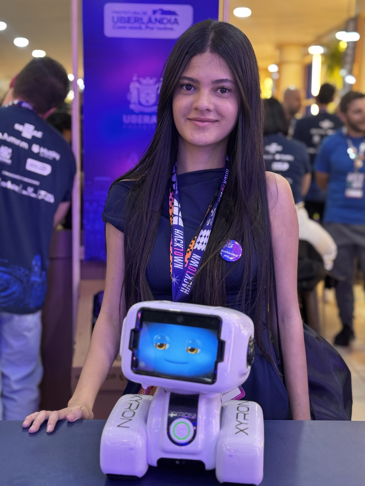
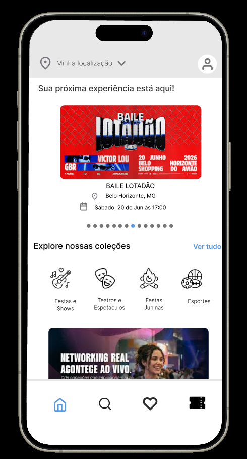
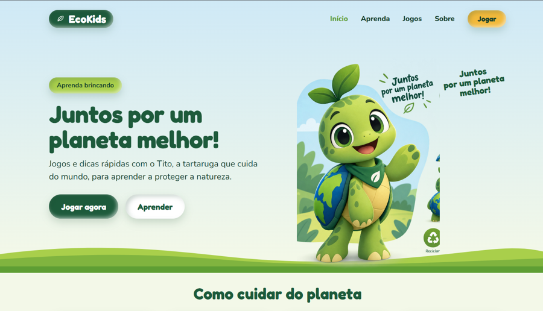

Sou estudante de Análise e Desenvolvimento de Sistemas, com foco em desenvolvimento web, banco de dados e design de interfaces (UI/UX). Tenho experiência com Python, SQL e prototipagem no Figma, além de vivência em rotinas administrativas e gestão de processos. Busco constantemente criar soluções eficientes, funcionais e focadas na experiência do usuário.
Oi, eu sou a Leticia.
Estudante de Análise e Desenvolvimento de Sistemas, aprendendo a criar páginas web do zero. Este portfólio é feito só com HTML e CSS.

Sobre mim
Habilidades
HTML
Estrutura da página com títulos, parágrafos, listas, imagens, links e tags semânticas como header, main e footer.
CSS
Cores, fontes, margin, padding, border e border-radius para deixar tudo organizado e bonito.
Flexbox
Alinhar e distribuir elementos lado a lado dentro de uma div pai, com justify-content, align-items e gap.
Grid
Montar layouts em linhas e colunas ao mesmo tempo, com repeat, minmax e grid-template-areas.
Projetos

App Sympla no Figma
Recriação das telas do aplicativo Sympla: página inicial com eventos em destaque, coleções por categoria e menu de navegação. Feito somente no Figma.

EcoKids (projeto integrador)
Site de educação ambiental com jogos e dicas rápidas guiadas pelo Tito, a tartaruga. O layout já está pronto no Figma e a versão com JavaScript vem a seguir.
Contato
Vamos conversar?
Me chame por um dos canais ao lado. Vou adorar saber o que você achou do portfólio.